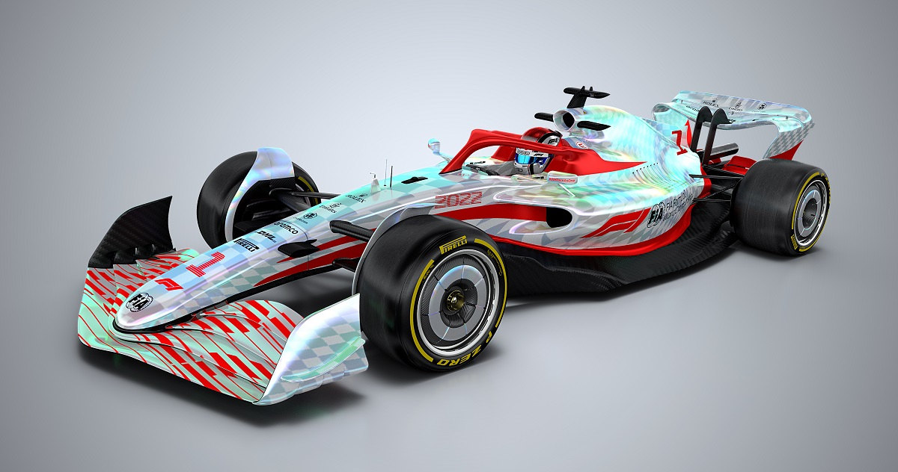

The 2022 World Championship saw an overhaul of the technical regulations. Prior to the season, the FIA said it anticipated that the car performance deficit between the fastest and slowest teams on the grid would be cut by half when compared to 2021.
Drivers were consulted on developing the new technical regulations, which were deliberately written to be restrictive so as to prevent teams from developing radical designs that limited the ability of drivers to overtake.
The technical regulations reintroduced the use of ground effects for the first time since venturi tunnels under cars were banned in 1983. This coincides with a simplification of the bodywork, making the underside of the car the primary source of aerodynamic grip. This aims to reduce the turbulent air in the wake of the cars to allow drivers to follow each other more closely whilst still maintaining a similar level of downforce compared to previous years. Further changes to the aerodynamics are aimed at limiting the teams' ability to control airflow around the front wheels and further reduce the cars' aerodynamic wake. This includes the elimination of bargeboards, the complex aerodynamic devices that manipulate airflow around the body of the car. The front wing and endplates have been simplified, reducing the number and complexity of aerodynamic elements. The front wing must also directly connect to the nosecone, unlike pre-2022 designs where the wing could be connected to the nose via supports to create a space under the monocoque, thereby encouraging airflow under the car by way of the wing's larger surface area and the nose's increased height. The rear wings are wider and mounted higher than in previous years, with additional restrictions in place to limit the constructors' ability to use a car's exhaust gases to generate downforce. Figures released by the Working Group revealed that where a 2019-specification car following another car had just 55% of its normal levels of downforce available, a 2022-specification car following another car would have up to 86% of its normal levels of downforce.
Teams have been further restricted in the number of aerodynamic upgrades they can introduce to the car, both over the course of a race weekend and over the course of the championship. These rules were introduced to further cut the costs of competing. Following the decision to delay the 2021 regulations to 2022, aerodynamic development of the cars was banned from 28 March 2020 to the end of 2020.
In 2021, the championship introduced a sliding scale system to regulate aerodynamic testing. Under this system, the least successful teams in the previous year's World Constructors' Championship standings would be given additional time for aerodynamic testing. Conversely, the most successful teams would be given less time to complete testing.[84][85] The system was trialled in 2021 with the results used to create a more formal, structured and steeper model for the 2022 championship.
Discussions over the 2022 engine regulations began in 2017 and were finalised in May 2018. The proposed regulations involved removing the motor generator unit–heat (MGU-H) to simplify the technology used in the engine whilst raising the maximum rev limit by 3,000 rpm. Further proposals dubbed "plug-and-play" would see engine suppliers bound by the regulations to make individual engine components universally compatible, allowing teams to source their components from multiple suppliers. Manufacturers would also be subject to a similar regulation concerning commercially available materials as chassis constructors would be subject to from 2021. The proposals were designed to simplify the engine technology whilst making the sport more attractive to new entrants. As no new power unit suppliers committed themselves to entering the sport in 2022, the existing suppliers proposed to retain the existing power unit formula in a bid to reduce overall development costs.
The quota system of power unit components was continued in 2022, with teams given a limited number of individual components that can be used before incurring a penalty.
Wheel diameter increased from 13 inches (33 cm) to 18 inches (46 cm). The 18-inch wheels were introduced into the Formula 2 Championship in 2020 to test changes in tyre behaviour. It was originally proposed that the use of tyre warmers—electric blankets designed to keep the tyres at the optimal operating temperature when not in use—would be banned, although this decision was later reversed after opposition from the tyre supplier Pirelli. The temperature of the tyre blankets was reduced. Previously, the front tyres could be heated to 100 °C (212 °F), while the rears were at 80 °C (176 °F). Both dropped to 70 °C (158 °F) from the start of the season. Tyre warmers will instead become a standardised piece of equipment, with all teams required to use the same product with a view to eventually phase them out altogether by 2024. While Pirelli remain the official tyre partner and provider, BBS would partner and supply the rims to all Formula One teams from 2022 as part of a four-year deal.
Source: Wikipedia